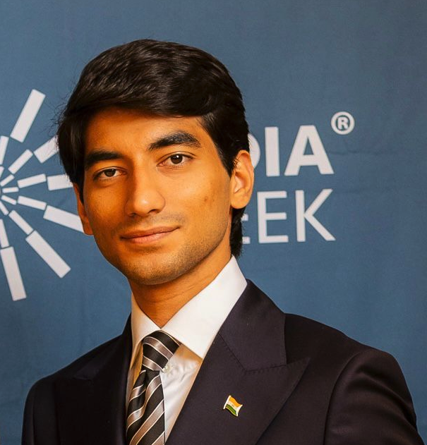
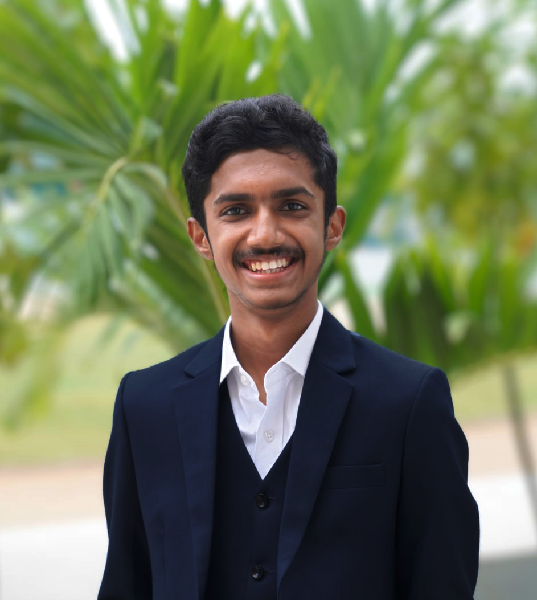
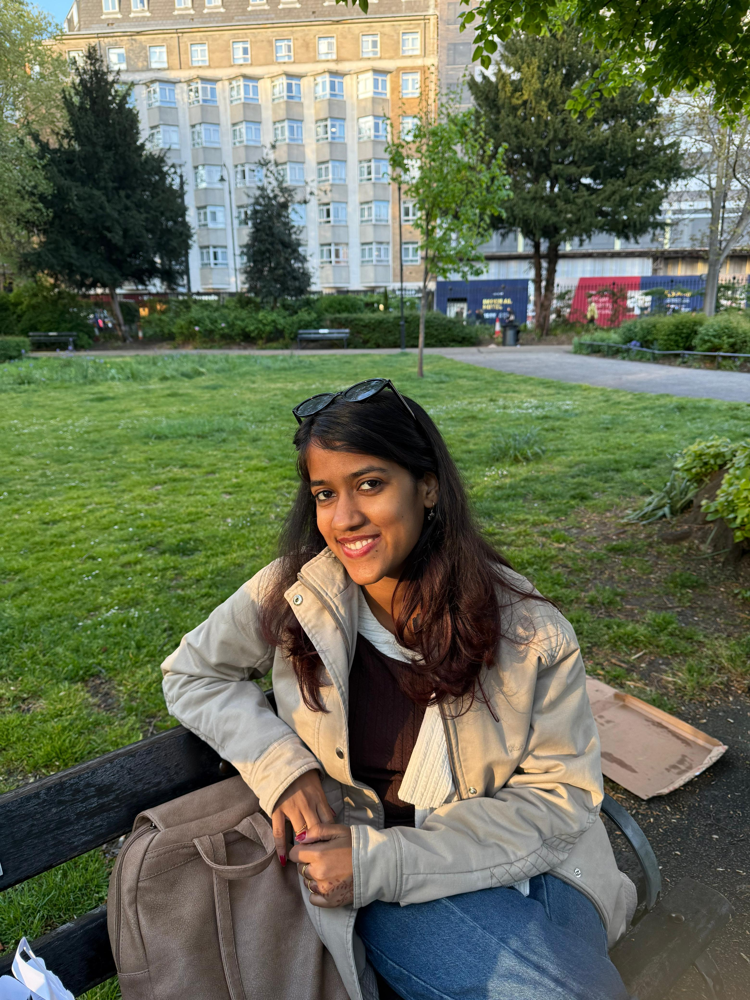
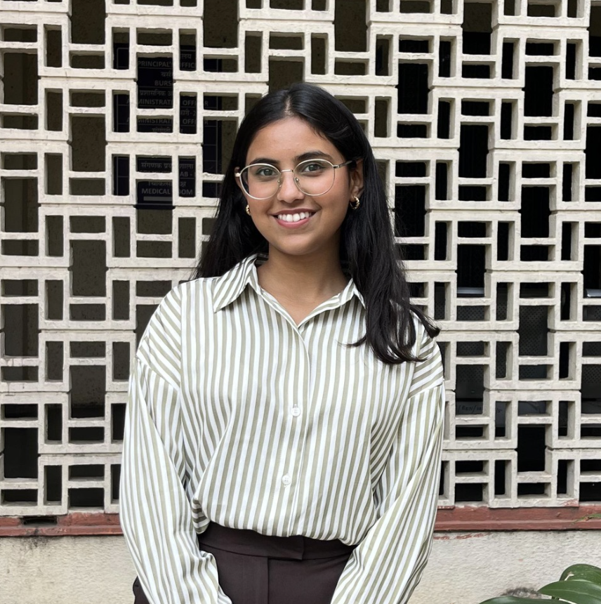
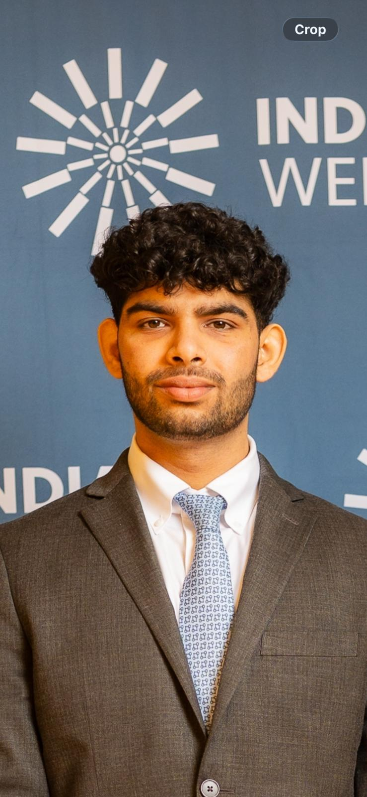
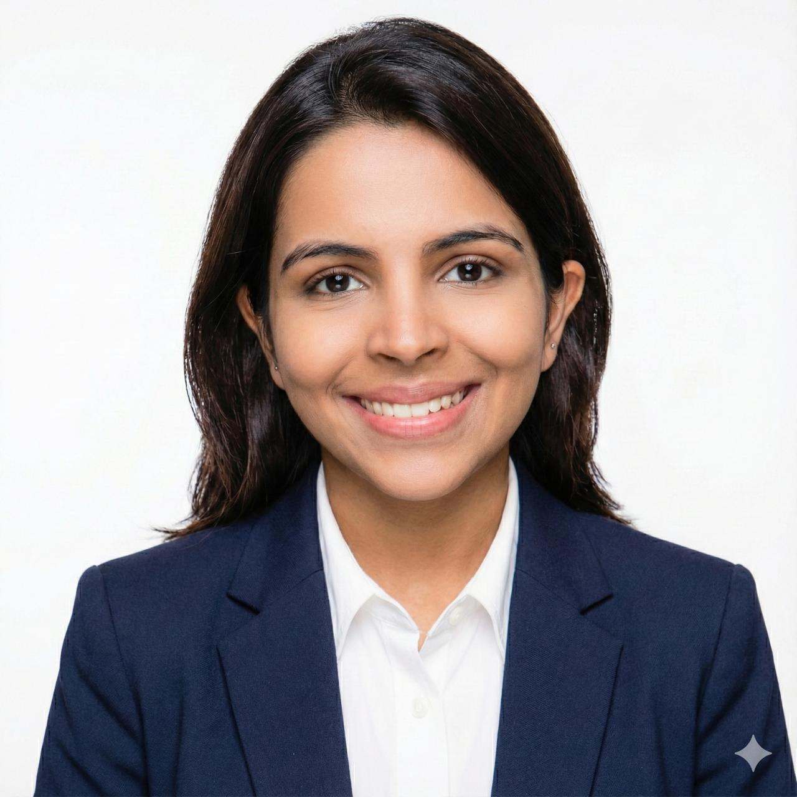
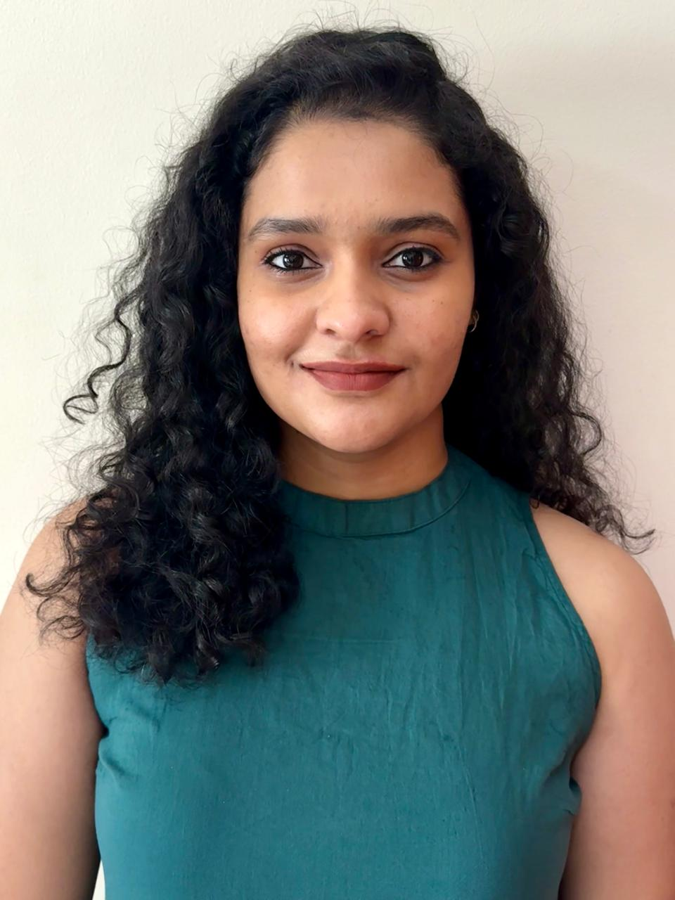
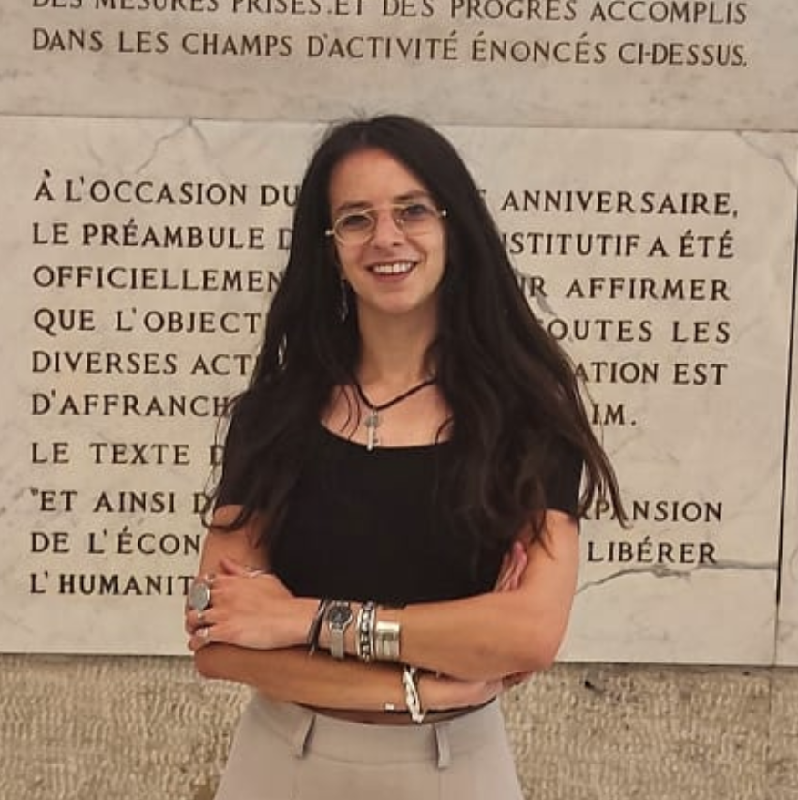

Insight Packages
Structured intelligence to keep your leadership informed as conditions shift and opportunities open.
- Quarterly Risk Barometer
- Country briefs
- Corridor views and triggers to watch
- Interim alerts on material changes
A practitioner-led intelligence and advisory firm helping executives navigate geopolitical risk, identify opportunities, and make confident decisions in an uncertain world.
A practitioner-led, research-driven firm that translates the complexity of geopolitics and global economics into clear, actionable intelligence for business leaders.
To improve capital mobility and unlock cross-border growth by highlighting risks, aligning incentives, and sequencing action across high-growth trade corridors.
Three ways to engage, from structured intelligence to bespoke research for a single decision.
Structured intelligence to keep your leadership informed as conditions shift and opportunities open.
Direct engagement with your leadership team to translate intelligence into concrete decisions and governance steps.
Bespoke deep-dives for specific deals, corridors, or investment decisions.
Every country is read on Opportunity, Stability, Capacity and Trajectory. Each pillar is scored on its own before anything is combined.
The four pillars combine into a single Risk-Adjusted Opportunity score, recalculated as conditions move.
The score is what you read in the quarterly Barometer, explore in the RAO dashboard, and act on in every country brief.
Continuous monitoring of World Bank data, central bank feeds and global news outlets.
Large language models evaluate the signals against the four pillars to identify material changes.
Updated Risk-Adjusted Opportunity scores are calculated for each country as conditions move.
Significant score movements trigger a mandatory review by our experts before anything is published.
We start with analysis; we finish with decisions.
Signals from ministries, regulators, financiers, and our regional network across high-growth markets.
Risk-Adjusted Opportunity scores blend market opportunity with on-the-ground stability.
Best, base and worst cases tied to concrete triggers such as elections and policy moves.
Clear strategies and governance steps, calibrated to your time horizon and risk appetite.
A multibillion-dollar agreement for Saudi Arabia's civilian nuclear program faces uncertainty due to new political conditions and regional tensions.
By Shiva Dang Defence SpendingNATO leaders gathered in Ankara to pledge increased defence spending, sparking market interest and new procurement contracts, though implementation varies among allies.
By Indulekha A. Political TransitionThe resignation of Sir Keir Starmer deepens uncertainty over Labour's economic direction and future leadership challenges.
By Shiva DangRoster under review: departures removed and incoming partners added once confirmed.

Holds a Master’s in International Political Economy from King’s College London. His experience spans financial services, strategic advisory, and diplomacy, informing the GSU’s institutional strategy and client engagements.

Holds a BTech in Computer Science Engineering with a specialisation in AI and Machine Learning from Woxsen University. At the GSU, he leads the unit’s technological infrastructure, digital strategy, and data-driven intelligence platforms.
Pursuing an MA in International Political Economy at King’s College London, with interests in monetary systems, capital flows, and financial stability. As Chief Data Officer, he builds the quantitative frameworks and analytical systems that underpin the GSU’s country risk and opportunity assessments.

Holds an MSc in Politics and International Relations from SOAS University of London. As Operations Lead, she oversees the GSU’s day-to-day operations and organisational strategy, with research interests spanning South Asian politics, geoeconomics, and regional security.

Pursuing an MSc in International Relations at the London School of Economics, with a focus on international development, geoeconomics, and conflict studies. As Marketing and Outreach Head, she leads the GSU’s brand identity and communications strategy across all outputs.

As Chief Strategy Officer, he leads the GSU’s Strategic vertical with a focus on business development and market entry across high-growth markets. His work spans regulatory navigation and investment sequencing, with a geographic focus on India, the GCC, Sub-Saharan Africa, and Latin America.
Holds an MSc in International Public Policy from University College London and a BA in Economics. At the GSU, she leads the Research vertical, contributing to geopolitical research and strategic policy analysis, with interests in global governance and emerging markets.

Studying International Relations and Economics at Ashoka University. She contributes to policy research and strategic market analysis at the GSU, with a focus on crafting clear, insight-driven narratives.
Holds an MA in International Relations from King’s College London. His work focuses on public–private sector collaboration, policy engagement, and sustainability, examining how regulatory frameworks and political risk shape strategic decision-making.

Holds an MSc in Financial Economics and brings two years of experience as an analyst at Goldman Sachs. At the GSU, she works as a Research Analyst with interests in geoeconomics and macroeconomic developments, with a particular focus on emerging markets.

Holds a Master’s in International Relations and Global Security from Sapienza University of Rome. She specialises in geopolitical analysis, OSINT research, and international security, bringing a multidisciplinary perspective to the study of global risk and strategic dynamics.
Holds a Master’s in Global Political Economy from Leiden University and a degree in Politics and Sociology from UCL. At the GSU, he is a Research Analyst and podcast co-host, with expertise in Pakistan’s political economy and prior experience at a UK think tank and in retail investment.
Contributes to policy briefs and geoeconomic trend analysis through the GSU’s Europe Programme. He brings extensive experience in international development and sustainability strategy.
An AI engineer with expertise in building intelligent applications that address complex, real-world challenges. At the GSU, he contributes to the development of AI-driven tools and analytical systems.
[Short biography to be supplied]
[Short biography to be supplied]
[One or two sentences on the partnership]
[One or two sentences on the partnership]
Our clients
Interested in bespoke strategic advice? Tell us the markets and decisions you are weighing. We reply by email.